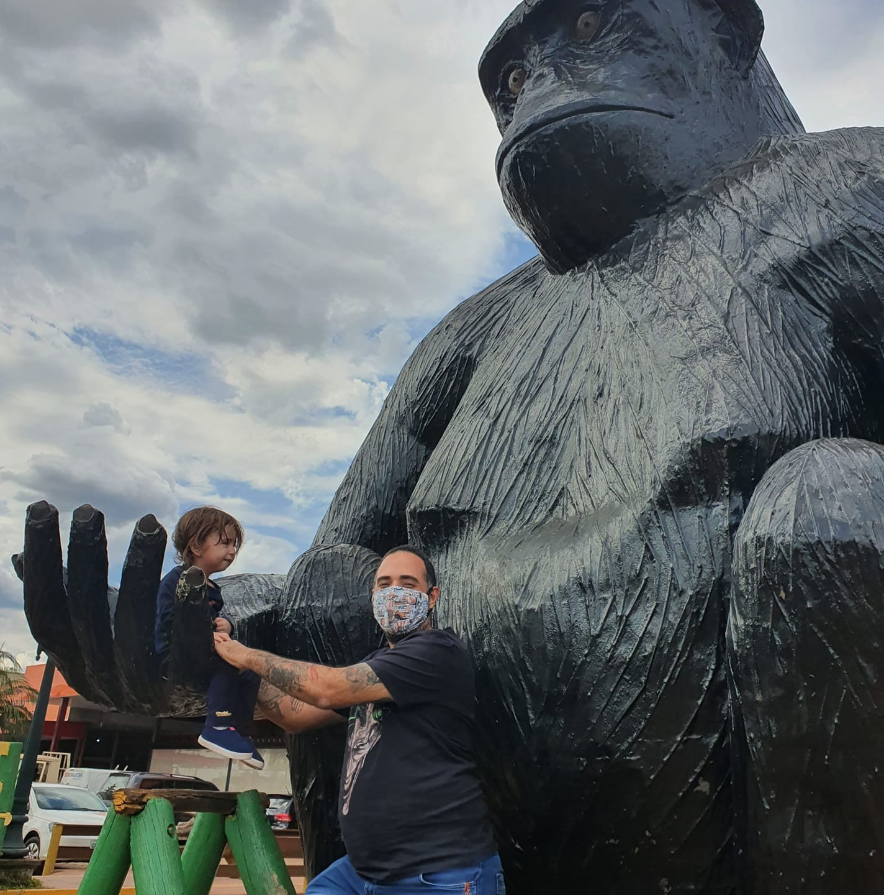

-
Edi Carlos Marques

LATTESProfessor do Instituto Federal formado em Filosofia, especialista em filosofia contemporânea. Tem mestrado em educação escolar, além de cursar bacharelado em direito.
-
Fábio luiz Faria
LATTESProfessor do Instituto Federal formado em Engenharia da Computação, com especialização em docência em ciencia e tecnologia da informação, além de licenciatura pedagógica em história.

Fonte: Guia dos quadrinhos, 2007